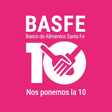

Rescate de alimentos
Recupera alimentos aptos para el consumo que ya no pueden ser comercializados.

Banco de Alimentos Santa Fe
Elegimos el Banco de Alimentos Santa Fe porque es una organización de nuestra zona que realiza una tarea muy importante. Se encarga de recuperar alimentos que todavía están en buenas condiciones pero que ya no pueden ser vendidos, y los entrega a organizaciones sociales y comedores.
El Banco de Alimentos Santa Fe comenzó como una iniciativa a fines de 2015 y en 2016 obtuvo su personería jurídica. En abril de 2017 fue fundado por un grupo de 29 voluntarios.
Su principal misión es rescatar alimentos que son aptos para el consumo pero que, por diferentes motivos, no pueden ser comercializados. Luego estos alimentos son entregados a organizaciones sociales, comedores y asociaciones que ayudan a personas con dificultades económicas.
BASFE busca promover una alimentación saludable, el consumo responsable y la reducción del desperdicio de alimentos.
Ayuda principalmente a comedores, organizaciones sociales y asociaciones que trabajan con personas que tienen dificultades para acceder a una alimentación adecuada.
Recupera alimentos aptos para el consumo que ya no pueden ser comercializados.
Los alimentos son organizados y luego distribuidos a instituciones que los necesitan.
Trabaja junto a comedores y organizaciones sociales para ayudar a personas de la comunidad.
BASFE funciona principalmente gracias a la colaboración de personas, empresas y organizaciones.
El trabajo de los voluntarios es muy importante para que BASFE pueda llevar adelante sus actividades y ayudar a más personas.
Es nutricionista y voluntaria fundadora. Está relacionada con el área de nutrición de BASFE y participa en actividades de educación alimentaria y talleres sobre alimentación saludable.
Fue presidenta del Banco de Alimentos Santa Fe y participó en la organización y representación de BASFE.
Se puede colaborar como voluntario ayudando en diferentes actividades de la organización y difundiendo su trabajo.
Hay varias formas de colaborar con BASFE:
Para conocer más sobre BASFE y sus formas de colaboración, podés visitar su perfil en Idealist:
Ver BASFE en IdealistBASFE es una organización que busca ayudar a personas que necesitan alimentos y, al mismo tiempo, reducir el desperdicio de comida.
Su trabajo depende mucho de los voluntarios y de las donaciones de personas, empresas y otras organizaciones. Por eso creemos que es una buena ONG para realizar nuestro proyecto y mostrar de qué manera otras personas pueden colaborar.